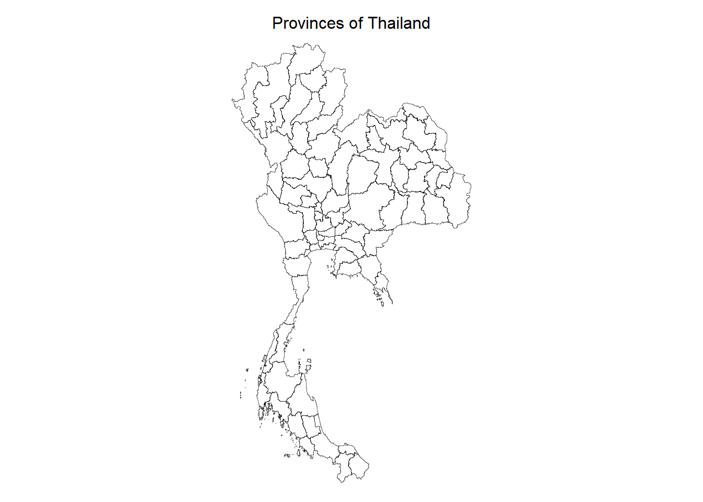
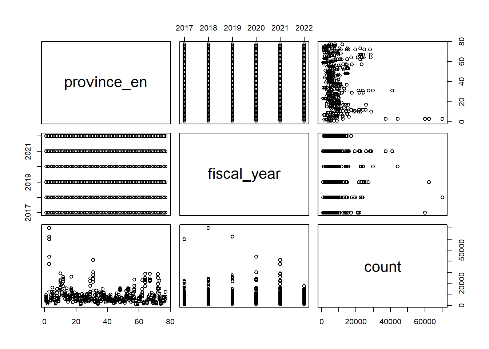

pacman::p_load(sf, st, tidyverse, lubridate, sfdep, tmap, ggplot2, knitr, Kendall)Take-home Exercise 2
Harnessing Geospatial Methods to Analyse Drug Abuse Patterns in Thailand
1. Setting the Scene: Geospatial Analysis of Drug Abuse in Thailand
In 2022, 567,609 drug users in ASEAN were treated, in which Thailand was found to have the highest number of drug users requiring treatment among ASEAN countries, followed by Malaysia, Indonesia, Laos, the Philippines, and Singapore. (Kahanto M., et al, 2022) Drug abuse is a significant social issue in Thailand, with profound health, financial, and societal implications. Positioned near the Golden Triangle—one of the largest drug production areas in Asia—Thailand faces ongoing challenges due to its geographical proximity and extensive transportation routes, which facilitate drug trafficking. Within Thailand, drug abuse is particularly prevalent among the youth, with approximately 2.7 million young people involved. Of those aged 15–19, around 300,000 are in need of drug treatment, and vocational students are disproportionately affected compared to their peers in secondary school.
This underscores the importance of drug treatment in addressing the complex problem of substance abuse and reduces the societal costs associated with drug abuse, such as healthcare expenses, lost productivity, and crime. Hence, to better allocate resources and develop targeted interventions, it is crucial to understand where drug abuse is most concentrated and how it spreads geographically. This is where geospatial analysis becomes essential.
In this exercise, I will utilise geospatial analysis methods to explore the province-level dynamics of drug abuse in Thailand. This will involve preparing a study area layer as sf polygon features at the province level, including Bangkok, and creating a drug abuse indicators layer within this study area. Using these extracted data layers, I will conduct global spatial autocorrelation analysis using sfdep methods, followed by local spatial autocorrelation analysis. Finally, I will describe the spatial patterns revealed by determining whether key indicators are spatially dependent, and identifying trends of clusters, outliers and hotspots over time.
2. Methods Used
2.1 Spatial Autocorrelation

This quote from Tobler (1970) highlights the essence of spatial autocorrelation, emphasising the importance of studying how values of the same variable are interconnected across space. By examining spatial dependence, we can better understand local and global patterns and variations. This law suggests that phenomena that are geographically close to each other are more likely to be similar or have some kind of spatial relationship compared to phenomena that are farther apart.
It is also important to note that spatial structure and spatial autocorrelation are inherently interconnected (Tiefelsdorf, 1998):
Spatial structure encompasses all the connections through which the autocorrelated phenomenon spreads.
Without a significant autocorrelated process, spatial structure cannot be empirically observed.
Thus, the observed spatial distribution is regarded as a reflection of the underlying spatial process. When spatial autocorrelation is present, the value of a variable at a given observation is connected to the values of that same variable at neighbouring observations:

Configuration of areas showing different types of autocorrelation (Nguyen K. et al., 2022)
Positive Spatial Autocorrelation occurs when similar values of the variable cluster geographically.
Negative Spatial Autocorrelation arises when dissimilar values are geographically close, indicating that nearby locations tend to differ more than those that are farther apart. This situation often reflects spatial competition.
In the absence of spatial autocorrelation, the distribution of observations can be considered random.
2.2 Cluster and Outlier Analysis
Cluster and Outlier Analysis can be effectively applied using Local Moran’s I, Local Geary’s C, Moran scatterplots, and LISA Cluster Maps to identify and understand spatial patterns in data. Here’s how each of these methods can be utilised
2.2.1 Local Moran’s I and Local Geary’s C
Local Moran’s I: This statistic assesses local spatial autocorrelation by measuring the degree of similarity of a location’s value to those of its neighbours. It identifies clusters of high or low values (hotspots and cold spots) and outliers (areas where a value is significantly different from its neighbours). By calculating Local Moran’s I for each location, we can highlight areas with significant spatial dependence, helping to identify regions where interventions may be needed.
Local Geary’s C: Similar to Local Moran’s I, Local Geary’s C focuses on differences rather than similarities. It quantifies the spatial variation between nearby locations, emphasising dissimilarity. This method can help detect spatial competition, where nearby areas have contrasting values. By using Local Geary’s C, we can uncover regions that may experience conflicting trends or behaviours, providing insights into localised dynamics.
2.22. Moran Scatterplot
The Moran scatterplot visualises the relationship between the value of a variable at a location and the average value of its neighbours. We can plot scatterplot to represent a location, with the x-axis showing the local mean of neighbouring values and the y-axis showing the local value.
Plots like this can help us in identifying clusters (high-high or low-low) and outliers (high-low or low-high). The scatterplot can reveal spatial patterns that are not immediately obvious.
2.2.3. LISA Cluster Map
A LISA Cluster Map visually represents the results of Local Indicators of Spatial Association, indicating the spatial clusters of similar values (hotspots) and outliers.
I will use these maps to quickly identify regions of interest such that areas identified as hotspots will be marked in red to signify high values surrounded by high values, while cold spots will be marked in blue for low values surrounded by low values. Outliers will be highlighted in contrasting colours.
2.3 Emerging Hot Spot Analysis
There are different methods for analysing spatial patterns and detecting hotspots including spatial autocorrelation and cluster analysis. Emerging Hot Spot Analysis (EHSA) is a specific spatio-temporal method used to examine hotspots over a designated observation period. It integrates two well-known techniques: the traditional Getis-Ord Gi* statistic for hotspot detection and the Mann-Kendall test for assessing monotonic trends over time. The main goal of EHSA is to analyse how hot and cold spots change over time, focusing on whether these areas are increasing in intensity, decreasing, or remaining constant.
3. Importing Packages into R
Let’s load all the required packages for conducting our analysis.
sf: provides a standardised way to encode spatial vector data in R environment, facilitating spatial data operations and analysis.st: create simple features from numeric vectors, matrices, or lists, enabling the representation and manipulation of spatial structures in R.tidyverse: a collection of R packages designed for data science. All packages share an underlying design philosophy, grammar, and data structure.sfdep: for computing spatial weights, global and local spatial autocorrelation statisticstmap: for creating static and interactive visualisations and maps.ggplot2: for creating advanced visualisations, graphics and maps using the Grammar of Graphics.knitr: for dynamic report generation in R using Literate Programming techniques.Kendall: for computing the Kendall rank correlation and Mann-Kendall trend test
4. Importing Datasets into R

We will be leveraging two datasets in this exercise. The first dataset to be used is Thailand’s provincial boundary is tha_admbnda_adm1_rtsd_20220121 which exists in ESRI .shp format and is based on the Thailand geographic coordinate system. This dataset is extracted from Thailand - Subnational Administrative Boundaries via the HDX portal.
The second dataset thai_drug_offenses_2017_2022 consists of aspatial data in a CSV format that contains reported cases of drug offences in Thailand from 2017 to 2022. The dataset is extracted from Thailand Drug Offenses [2017-2022] in Kaggle.
4.1 Importing Geospatial Data
In this section, st_read() of sf package will be used to import tha_admbnda_adm1_rtsd_20220121 dataset into the R environment. The st_transform() function below converts the CRS of the sf object to EPSG:4618 which maps to Thailand’s coordinate system.
thai_boundary <- st_read(dsn = "data/geospatial",layer = "tha_admbnda_adm1_rtsd_20220121") %>% st_transform(crs = 4618)Reading layer `tha_admbnda_adm1_rtsd_20220121' from data source
`C:\SamanthaxFoo\IS415-GAA\Take-home_Ex\Take-home_Ex2\data\geospatial'
using driver `ESRI Shapefile'
Simple feature collection with 77 features and 16 fields
Geometry type: MULTIPOLYGON
Dimension: XY
Bounding box: xmin: 97.34336 ymin: 5.613038 xmax: 105.637 ymax: 20.46507
Geodetic CRS: WGS 84# Inspect data
thai_boundarySimple feature collection with 77 features and 16 fields
Geometry type: MULTIPOLYGON
Dimension: XY
Bounding box: xmin: 97.34336 ymin: 5.613038 xmax: 105.637 ymax: 20.46507
Geodetic CRS: SAD69
First 10 features:
Shape_Leng Shape_Area ADM1_EN ADM1_TH ADM1_PCODE
1 2.417227 0.13133873 Bangkok กรุงเทพมหานคร TH10
2 1.695100 0.07926199 Samut Prakan สมุทรปราการ TH11
3 1.251111 0.05323766 Nonthaburi นนทบุรี TH12
4 1.884945 0.12698345 Pathum Thani ปทุมธานี TH13
5 3.041716 0.21393797 Phra Nakhon Si Ayutthaya พระนครศรีอยุธยา TH14
6 1.739908 0.07920961 Ang Thong อ่างทอง TH15
7 5.693342 0.54578838 Lop Buri ลพบุรี TH16
8 1.778326 0.06872655 Sing Buri สิงห์บุรี TH17
9 2.896316 0.20907828 Chai Nat ชัยนาท TH18
10 4.766446 0.29208711 Saraburi สระบุรี TH19
ADM1_REF ADM1ALT1EN ADM1ALT2EN ADM1ALT1TH ADM1ALT2TH ADM0_EN ADM0_TH
1 <NA> <NA> <NA> <NA> <NA> Thailand ประเทศไทย
2 <NA> <NA> <NA> <NA> <NA> Thailand ประเทศไทย
3 <NA> <NA> <NA> <NA> <NA> Thailand ประเทศไทย
4 <NA> <NA> <NA> <NA> <NA> Thailand ประเทศไทย
5 <NA> <NA> <NA> <NA> <NA> Thailand ประเทศไทย
6 <NA> <NA> <NA> <NA> <NA> Thailand ประเทศไทย
7 <NA> <NA> <NA> <NA> <NA> Thailand ประเทศไทย
8 <NA> <NA> <NA> <NA> <NA> Thailand ประเทศไทย
9 <NA> <NA> <NA> <NA> <NA> Thailand ประเทศไทย
10 <NA> <NA> <NA> <NA> <NA> Thailand ประเทศไทย
ADM0_PCODE date validOn validTo geometry
1 TH 2019-02-18 2022-01-22 -001-11-30 MULTIPOLYGON (((100.6139 13...
2 TH 2019-02-18 2022-01-22 -001-11-30 MULTIPOLYGON (((100.7306 13...
3 TH 2019-02-18 2022-01-22 -001-11-30 MULTIPOLYGON (((100.3415 14...
4 TH 2019-02-18 2022-01-22 -001-11-30 MULTIPOLYGON (((100.8916 14...
5 TH 2019-02-18 2022-01-22 -001-11-30 MULTIPOLYGON (((100.5131 14...
6 TH 2019-02-18 2022-01-22 -001-11-30 MULTIPOLYGON (((100.3332 14...
7 TH 2019-02-18 2022-01-22 -001-11-30 MULTIPOLYGON (((101.3453 15...
8 TH 2019-02-18 2022-01-22 -001-11-30 MULTIPOLYGON (((100.3691 15...
9 TH 2019-02-18 2022-01-22 -001-11-30 MULTIPOLYGON (((100.1199 15...
10 TH 2019-02-18 2022-01-22 -001-11-30 MULTIPOLYGON (((101.3994 15...Let’s verify the coordinate reference systems of the thai_boundary object to ensure the assignment of the correct CRS value.
st_crs(thai_boundary)Coordinate Reference System:
User input: EPSG:4618
wkt:
GEOGCRS["SAD69",
DATUM["South American Datum 1969",
ELLIPSOID["GRS 1967 Modified",6378160,298.25,
LENGTHUNIT["metre",1]]],
PRIMEM["Greenwich",0,
ANGLEUNIT["degree",0.0174532925199433]],
CS[ellipsoidal,2],
AXIS["geodetic latitude (Lat)",north,
ORDER[1],
ANGLEUNIT["degree",0.0174532925199433]],
AXIS["geodetic longitude (Lon)",east,
ORDER[2],
ANGLEUNIT["degree",0.0174532925199433]],
USAGE[
SCOPE["Geodesy."],
AREA["Brazil - onshore and offshore. In rest of South America - onshore north of approximately 45°S and Tierra del Fuego."],
BBOX[-55.96,-91.72,12.52,-25.28]],
ID["EPSG",4618]]Before we delve into further data analysis, it is crucial that we first understand the levels of administration that makes up Thailand today. In particular, Thailand has 4 levels of administration, i.e. level 0 (country), 1 (province), 2 (district), and 3 (sub-district) boundaries. Thailand comprises 76 provinces (Thai: จังหวัด,or English: changwat), along with one special administrative area, Bangkok, the capital.
- These provinces function as the main local government units and possess legal personhood.
- Each province is subdivided into amphoe (districts), which are further broken down into tambon (sub-districts), representing the next tier of local governance.
- For this analysis, I will only focus on the province administration level.
We can visualise the structure of our geospatial object as such.
tmap_mode("plot")tmap mode set to plottingtm_shape(thai_boundary)+
tm_borders(col = "black", lwd=0.3, alpha=0.6)+
tm_layout(
main.title = "Provinces of Thailand",
main.title.size = 1,
main.title.position = "center",
legend.show = FALSE,
frame = FALSE)
4.2 Importing Aspatial Data
In this section, read_csv() of sf package will be used to import the csv file into the R environment. The output is a R dataframe class.
drug_cases <- read_csv("data/aspatial/thai_drug_offenses_2017_2022.csv")Rows: 7392 Columns: 5
── Column specification ────────────────────────────────────────────────────────
Delimiter: ","
chr (3): types_of_drug_offenses, province_th, province_en
dbl (2): fiscal_year, no_cases
ℹ Use `spec()` to retrieve the full column specification for this data.
ℹ Specify the column types or set `show_col_types = FALSE` to quiet this message.head(drug_cases)# A tibble: 6 × 5
fiscal_year types_of_drug_offenses no_cases province_th province_en
<dbl> <chr> <dbl> <chr> <chr>
1 2017 drug_use_cases 11871 กรุงเทพมหานคร Bangkok
2 2017 drug_use_cases 200 ชัยนาท Chai Nat
3 2017 drug_use_cases 553 นนทบุรี Nonthaburi
4 2017 drug_use_cases 450 ปทุมธานี Pathum Thani
5 2017 drug_use_cases 378 พระนครศรีอยุธยา Phra Nakhon Si Ayut…
6 2017 drug_use_cases 727 ลพบุรี Loburi | Column Name | Data Type | Description |
| fiscal_year | <dbl> | The fiscal year during which the drug offenses were recorded. |
| types_of_drug_offenses | <chr> | The specific type or category of drug offence being reported. |
| no_cases | <dbl> | The total number of cases recorded for the specific combination of fiscal year |
| province_th | <chr> | The name of the province in Thailand, written in Thai. |
| province_en | <chr> | The name of the province in Thailand, written in English. |
Next, we will want to aggregate the total number of drug use cases according to each 77 provinces in Thailand. Here, I use left_join() to associate each drug use case to its respective province.
#We can see that all polygons are preserved
plot(drug_cases_province)
#We can see that all polygons are preserved
plot(drug_cases_province)
#We can see that all polygons are preserved
plot(drug_cases_province)
#We can see that all polygons are preserved
plot(drug_cases_province)
library(dplyr)
# Join and then convert to sf
drug_cases <- drug_cases %>%
left_join(thai_boundary %>% select(geometry, ADM1_EN), by = c("province_en" = "ADM1_EN")) %>%
st_as_sf()
glimpse(drug_cases)
# tm_shape(thai_boundary) +
# tm_polygons() +
# tm_shape(drug_cases) +
# tm_dots(col = "red")+
# tm_layout(
# main.title = "Drug Cases Across Thailand",
# main.title.size = 1,
# main.title.position = "center",
# frame = FALSE)5. Data Wrangling
5.1 Reduce Data Size
To reduce the memory load, we can drop the province names in Thai from our aspatial dataset as it is not relevant for this study.
drug_cases <- subset(drug_cases, select = c(-province_th))
head(drug_cases)# A tibble: 6 × 4
fiscal_year types_of_drug_offenses no_cases province_en
<dbl> <chr> <dbl> <chr>
1 2017 drug_use_cases 11871 Bangkok
2 2017 drug_use_cases 200 Chai Nat
3 2017 drug_use_cases 553 Nonthaburi
4 2017 drug_use_cases 450 Pathum Thani
5 2017 drug_use_cases 378 Phra Nakhon Si Ayutthaya
6 2017 drug_use_cases 727 Loburi We’ll also only retain columns that are most useful from thai_boundary.
thai_boundary <- subset(thai_boundary, select = c(Shape_Leng, Shape_Area, ADM1_EN, geometry))
head(thai_boundary)Simple feature collection with 6 features and 3 fields
Geometry type: MULTIPOLYGON
Dimension: XY
Bounding box: xmin: 100.1913 ymin: 13.47842 xmax: 100.9639 ymax: 14.80246
Geodetic CRS: SAD69
Shape_Leng Shape_Area ADM1_EN geometry
1 2.417227 0.13133873 Bangkok MULTIPOLYGON (((100.6139 13...
2 1.695100 0.07926199 Samut Prakan MULTIPOLYGON (((100.7306 13...
3 1.251111 0.05323766 Nonthaburi MULTIPOLYGON (((100.3415 14...
4 1.884945 0.12698345 Pathum Thani MULTIPOLYGON (((100.8916 14...
5 3.041716 0.21393797 Phra Nakhon Si Ayutthaya MULTIPOLYGON (((100.5131 14...
6 1.739908 0.07920961 Ang Thong MULTIPOLYGON (((100.3332 14...5.2 Remove Outer Islands
plot(st_union(thai_boundary))
# thai_boundary_valid <- st_make_valid(thai_boundary)
# features_within_boundary <- st_intersection(drug_cases, thai_boundary_valid)
# plot(features_within_boundary)Next, we will want to aggregate the total number of drug use cases according to each 77 provinces in Thailand. Here, I use st_join to associate each drug use case to its respective province.
drug_cases$gemoetryWarning: Unknown or uninitialised column: `gemoetry`.NULLThere are some troublesome rows where a report does not include the province as seen from how these rows contain empty values ‘NA’.
drug_cases[!rownames(drug_cases) %in% rownames(na.omit(drug_cases)), ]# A tibble: 0 × 4
# ℹ 4 variables: fiscal_year <dbl>, types_of_drug_offenses <chr>,
# no_cases <dbl>, province_en <chr>CHECK IF ITS TRUE. So let’s remove
drug_cases <- drug_cases[!is.na(drug_cases$province_en), ]Here, I create a new dataframe drug_cases_province to count the total number of cases per province.
drug_cases_province <- drug_cases %>%
group_by(province_en, fiscal_year) %>%
summarise(count = sum(no_cases)) `summarise()` has grouped output by 'province_en'. You can override using the
`.groups` argument.drug_cases_province# A tibble: 462 × 3
# Groups: province_en [77]
province_en fiscal_year count
<chr> <dbl> <dbl>
1 Amnat Charoen 2017 5076
2 Amnat Charoen 2018 5651
3 Amnat Charoen 2019 7339
4 Amnat Charoen 2020 3949
5 Amnat Charoen 2021 8961
6 Amnat Charoen 2022 4459
7 Ang Thong 2017 1614
8 Ang Thong 2018 2717
9 Ang Thong 2019 2781
10 Ang Thong 2020 2636
# ℹ 452 more rowsWe can see that all polygons are preserved
plot(drug_cases_province)
VIEW CASES BY PROVINCE
# basemap <- tm_shape(drug_cases) +
# tm_polygons() +
# tm_text("province_en", size=0.5)
# drug_indicator <- qtm(drug_cases, "no_cases")
# tmap_arrange(basemap, drug_indicator, asp=1, ncol=2)VIEW CASES BY YEAR
# tm_shape(drug_cases_province) +
# tm_polygons(col='white') +
# tm_shape(drug_cases_province) +
# tm_polygons("count", palette = "Blues", style="quantile") +
# tm_facets(by="fiscal_year", free.coords = FALSE)